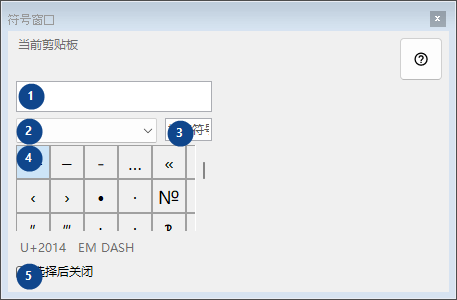
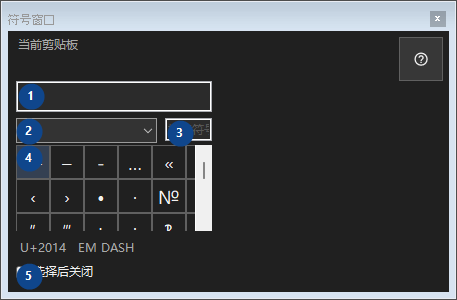

符号窗口
用途
生僻符号调色板：点击将字符复制到剪贴板；所有操作均在本地计算机完成。


使用顺序
阅读编号说明，选择所需值，然后使用窗口命令继续。
界面元素
1. 当前剪贴板
当前剪贴板
你的快捷键2. 符号集
符号集
你的快捷键3. 搜索符号
按名称、关键词或 Unicode 代码搜索
你的快捷键4. 符号网格
U+2014 EM DASH
你的快捷键5. 选择后关闭
选择后关闭
你的快捷键生僻符号调色板：点击将字符复制到剪贴板；所有操作均在本地计算机完成。


阅读编号说明，选择所需值，然后使用窗口命令继续。
当前剪贴板
你的快捷键符号集
你的快捷键按名称、关键词或 Unicode 代码搜索
你的快捷键U+2014 EM DASH
你的快捷键选择后关闭
你的快捷键